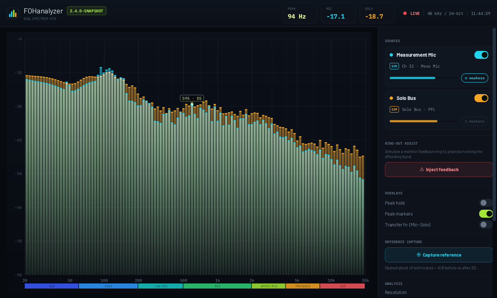
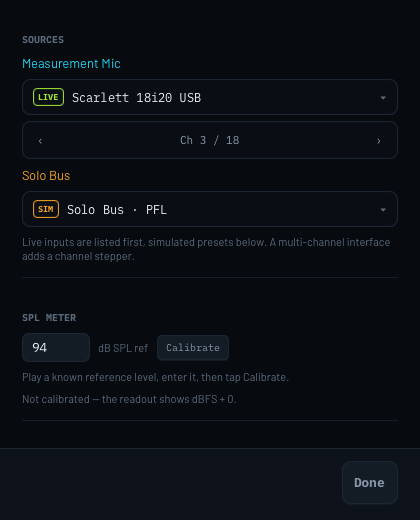

Two traces, one plot
The measurement-mic trace sits over the console solo-bus trace, so room response and source signal are read against each other rather than in turn.
Free software · GPL-3.0-or-later
A native desktop dual-channel RTA for front-of-house engineers. Overlay a measurement mic against the console solo bus, and read room response against source signal on one plot instead of guessing between two.

In 37 seconds
What it does
Ordered the way a hand moves mid-show: the traces first, then the ring-out assist, then the overlays, then the analysis settings you set once and forget.
The measurement-mic trace sits over the console solo-bus trace, so room response and source signal are read against each other rather than in turn.
Detect ring runs pitch detection over the live mic and reports the actual ringing fundamental — not the band centre a peak marker rounds to — then suggests a cut. Four blocks are estimated independently and the median wins, so one glitched block cannot move the notch.
Calibrate once against a known reference level and the big lime readout is genuine dB SPL. The calibration is written to disk the moment it changes — it is the expensive thing to redo.
Peak hold for what the plot did while you were not looking, peak markers for where it lives, and a transfer function for the mic−solo difference.
A dashed ghost of both traces, frozen where you left them. The honest way to A/B before against after EQ, instead of trusting what you remember the curve looked like.
Wide bands to see the shape of a room, narrow bands to find the one that is about to go. Smoothing and frame averaging on top of either.
Every source can run from a simulated preset, and Inject feedback is a practice mode for the ring-out workflow. The whole app is usable — and reviewable, and testable — without an interface on the desk.
Inputs, channels, calibration and view options persist between launches. Move between rigs and a missing interface quietly falls back to the simulator instead of pointing at a line that cannot open.
Open source
FOHanalyzer is licensed GPL-3.0-or-later. You can read every line, build it yourself, change what annoys you, and pass it on. There is no paid tier waiting behind a feature, because there is no tier.
The licence is not a marketing position — it is inherited. TarsosDSP, which does the FFT and the pitch detection, is GPL-3.0, and linking against it means everything shipped here has to be GPL-compatible too. That suits the project fine.
.dmg attached to the run.
Your measurements stay on your laptop
The app captures audio from a local input, draws it, and forgets it. Nothing is uploaded, nothing is stored beyond the settings you chose, and the microphone permission macOS asks for is exactly what it says: the measurement mic and console feeds the analyser needs to read. You do not have to take that on trust — it is a few hundred lines you can read.
How it works
Five packages, plainly named. If you have written any Java, you can find your way around this in an afternoon — which is rather the point of asking you to contribute.
Packages
| Package | Responsibility |
|---|---|
| engine | Frequency math, note names, formatting, signal simulation |
| dsp | Per-band averaging, smoothing, peak hold, stats |
| audio | Java Sound capture, FFT and pitch detection, device enumeration |
| ui | JavaFX canvas rendering and render loop, app shell, control rail, preferences |
| ui.controls | Toggle, Segmented, Meter, SourceCard, ChannelSelect, Logo |
Dependencies
| Dependency | For | Licence |
|---|---|---|
| JavaFX | UI toolkit and canvas | GPLv2 + CE |
| TarsosDSP | FFT, windows, YIN pitch detection | GPL-3.0 |
| SLF4J | Logging | MIT |
| JUnit 5 | Tests only | EPL-2.0 |
Live input is captured on a daemon thread into a 16384-sample ring buffer. Each frame the newest window is Blackman-windowed, transformed, and converted to dBFS per bin. The full write-up — including why the app is deliberately non-modular, and why the broadband RMS stays hand-rolled — is in the README.
A worked example: the rail and the window
The control rail is ordered by how often a hand reaches for something mid-show: the source traces and what they read, then ring-out assist, then the overlays, then the analysis settings last. Everything decided once when the rig is patched — which device feeds each source, and the SPL calibration — lives in a separate Preferences window instead, so it is not competing for the column you have to read during a show.
Nothing in that window is a commit step. The controls bind straight to the shared state that gets persisted anyway, so there is nothing to apply and nothing to cancel — the button in the corner only closes the window, and closing it changes nothing. The source cards back on the rail still carry a read-only line naming the current selection, because "is this trace live or simulated, and on which channel" is a question you ask at a glance while working — even though the answer is only set once.
That is the level at which the whole codebase is documented, which is what makes it approachable to change.

Who makes this
FOHanalyzer is developed and maintained by Markus Herhoffer. It is a non-commercial, spare-time project.
Markus Herhoffer
Developer & maintainer
For anything about the software, the issue tracker beats email — other people get to read the answer.
Contribute
FOHanalyzer gets better the more rigs it meets. You do not need to be a DSP engineer to move it forward — some of the most useful contributions are not code at all.
Device enumeration is the messiest part of any audio app. An 18-in Scarlett, a Wing, a USB stick mic, a Dante virtual soundcard — each one is a data point nobody has unless you send it.
Open an issue →
The code is plain JavaFX and Java Sound; only the packaging script is macOS-specific. A well-scoped, high-impact job with a clear finish line — and one of the most-asked-for things in the project.
See what is involved →
A/C weighting, coherence, phase, impulse response, a proper dual-FFT transfer
function. The dsp and engine packages are pure, fully
tested functions — the friendliest place in the codebase to land a change.
Pick something up →
The rail is ordered by how often a hand reaches for something mid-show. If that ordering is wrong for how you work, that is a real bug, and saying so is a real contribution.
Tell us →
A short guide to ringing out a wedge with this tool would help more engineers than most features would. So would a translation, or a screenshot of it working on your desk.
Start here →
This is a young project and the issue list is short. Nothing is claimed, nothing is queued behind six months of backlog, and whatever you file gets read — which is a better position to arrive in than most.
Open the tracker →
JDK 25 and Maven 3.9 are the only prerequisites, and the simulator means you can see the thing work before you own a measurement mic.
$ git clone https://github.com/d135-1r43/fohanalyzer
$ cd fohanalyzer && mvn javafx:run